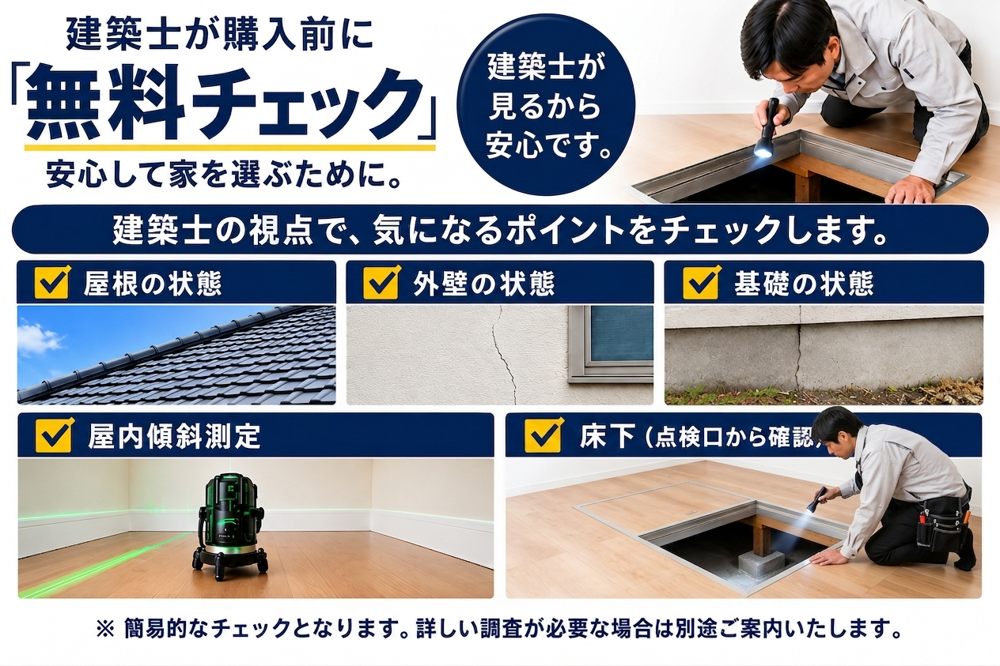
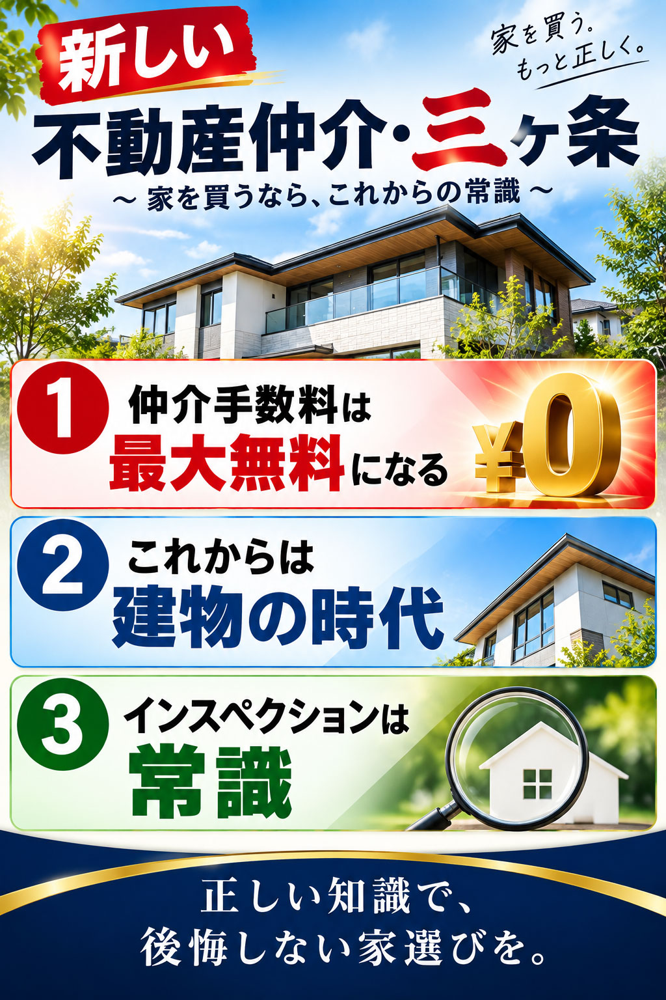
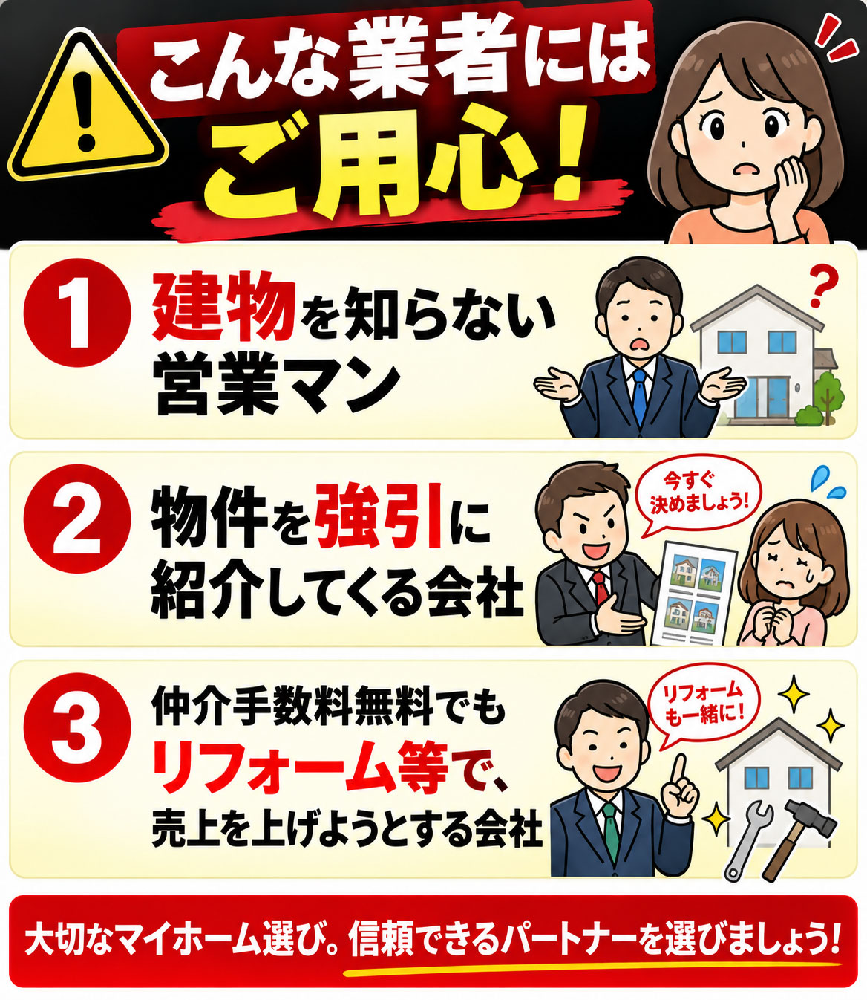
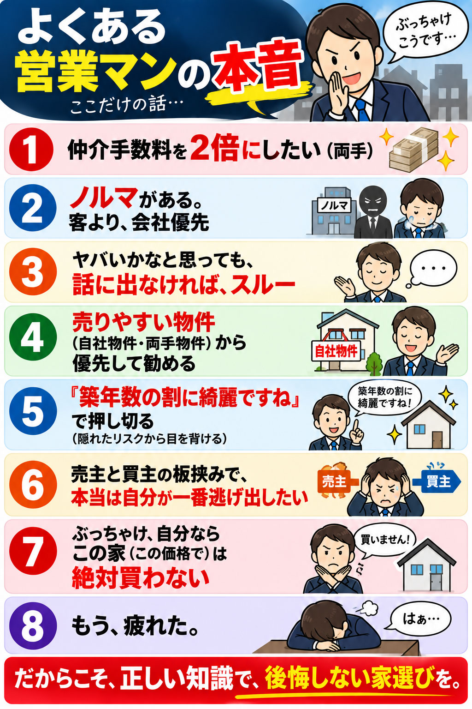
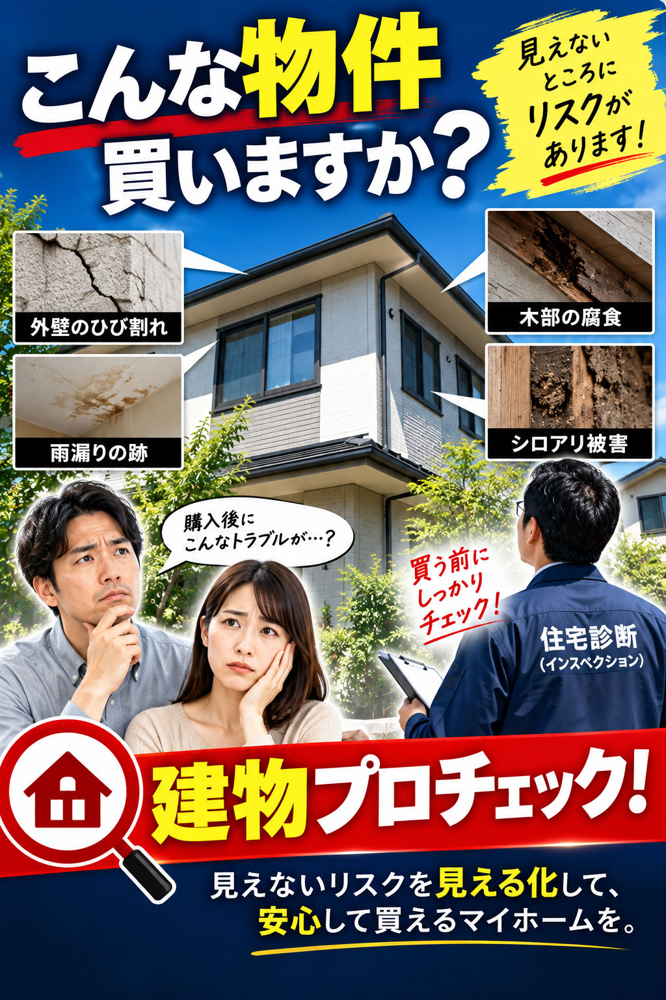
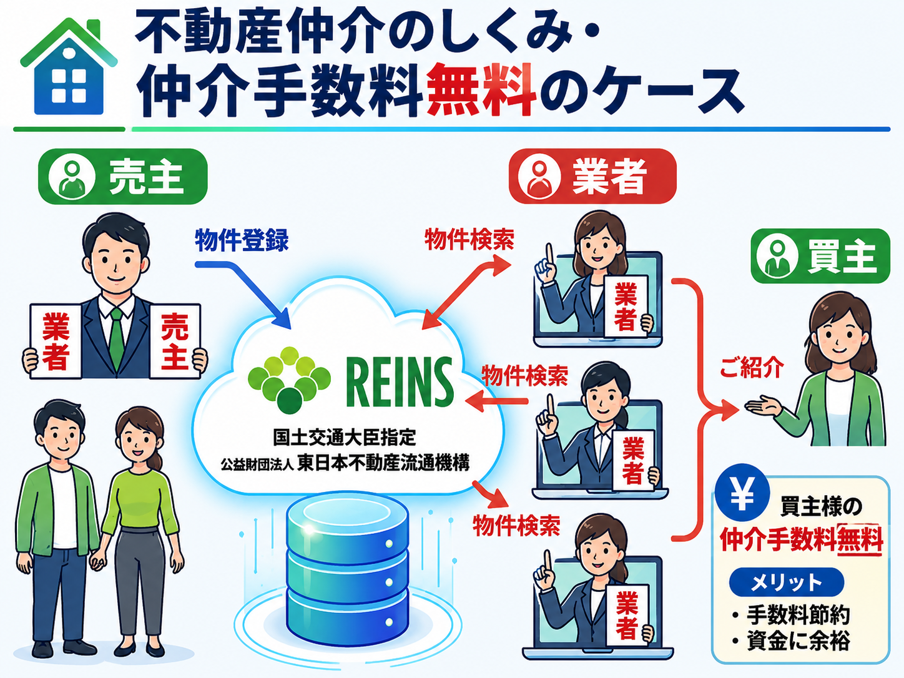

三井グループで培った 建物調査の経験を活かし、 建築士の視点から 安心できる住宅購入を お手伝いします。
※本インスペクションは、宅地建物取引業法に基づく「建物状況調査」ではありません。
※仲介手数料無料は、取引条件等を確認のうえ、社内承認により決定します。まずは、仲介手数料の見積もりをご依頼ください。
※※当方のインスペクションは簡易的なチェックであり、劣化事象等の見落としがあった場合でも、その責任を負いません。
※責任を伴う詳細な調査をご希望のお客様は、有料のインスペクションをご利用ください。


Q いい物件は、大手からじゃないと買えない
A レインズ登録物件は、どこの業者でも買える
Q おいしい物件は、大手が握っている
A 原則、物件を公開しないのは、違法行為
Q 仲介手数料は法律で決まっている
A 法律は、上限を決めている。無料・割引できる。
Q 知らない業者だから不安
A 弊社は、米国NASDAQ上場会社
A 世界30カ国以上、9万人のエージェントが所属



木部の含水率99.9% 異常な数値です。
床下は普段見ない場所です。
湿気が多いと、建物の寿命を縮める原因になることがあります。

建築士が床下点検口から確認し、
土間や木部の湿気を測定します。

※ 点検口から確認できる範囲の簡易チェックとなります。
建築士の欠陥住宅チェックリスト
無料配布中
［チェックリストを無料で受け取る］
新築住宅でも、小屋裏で結露が発生することがあります。

実際の測定例
野地板含水率
64.6％
結露が確認された場合は、
原因を確認することが大切です。

※ 小屋裏調査は、棚を壊す恐れがあるため、原則として行っていません。
ただし、点検口が安全に確認できる場合は、調査を行います。
「商談中です」「申込みが入りました」と言われ、 気になる物件を紹介してもらえないことがあります。

一部の不動産会社では、 他社からの購入申込みを受け付けないなど、 不適切な対応が問題となることがあります。
弊社のお客様からも、 このようなご相談をいただいております。
気になる物件がございましたら、 お気軽にご相談ください。
※ 囲い込みの解明には、お客様からの情報やご協力が必要となります。

新築一戸建て・リノベーションマンションは、 条件により仲介手数料が無料になります。
中古戸建・土地は、 半額・割引でご案内しております。
※ 対象物件・条件があります。詳しくはお気軽にお問い合わせください。
※ 物件のURLを、教えてください。
仲介料見積もりはこちら仲介手数料を無料にするために、サービスの質を落としているわけではありません。
従来の不動産会社とは、利益の作り方そのものが違います。
① 両手仲介に依存しない
② 片手仲介でも成り立つビジネスモデル
③ 広告宣伝費を50％削減
④ 業務のDX化・テレワークの導入
⑤ 1階の路面店を持たない
⑥ 固定費を抑えるエージェント制の採用
⑦ 仲介手数料無料は、会社の承認が必要
だから、仲介手数料を最大無料にする。